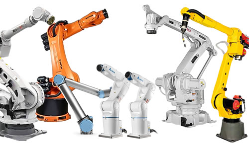
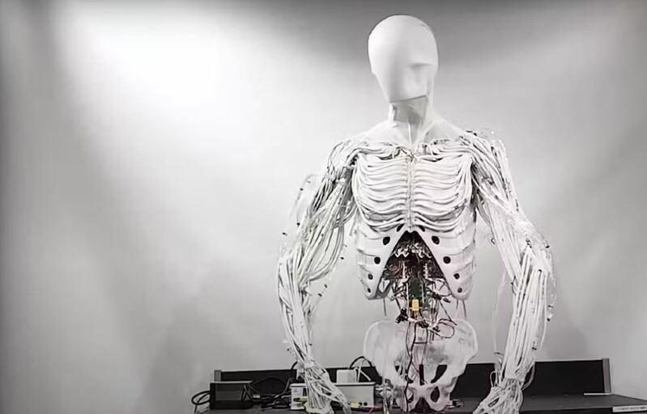
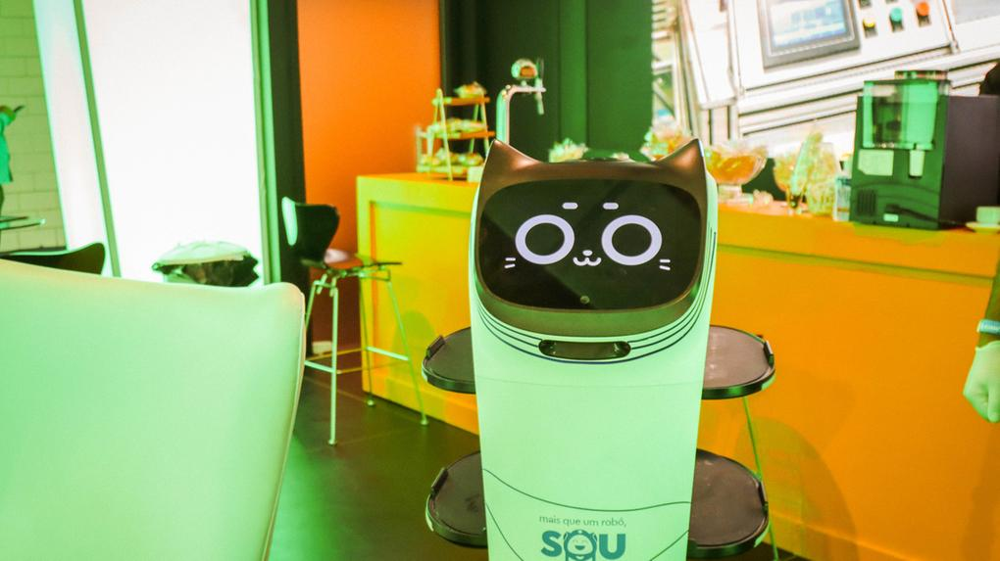

A robótica está presente em diversos setores e se manifesta de diversas formas conforme o tipo de robô utilizado:
Tipos de Robôs
-
Industriais: Utilizados em fábricas e linhas de produção.

Móveis: Se locomovem de forma autônoma (como drones ou robôs aspiradores).
Humanoides: Imitam o corpo e movimentos humanos.

Educacionais: Usados em escolas e cursos para ensinar lógica e tecnologia.
De serviço: Atendem pessoas em hotéis, shoppings e hospitais.
